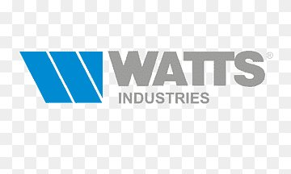
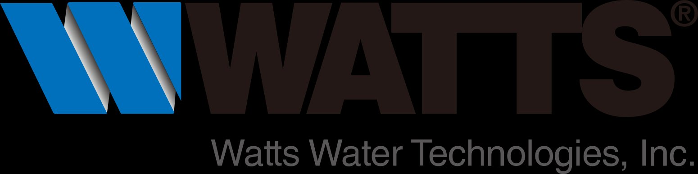

Chloé Beruti
Alternante BTS SIO option SISR
Administratrice Réseaux & Systèmes chez Watts Electronics

Alternante BTS SIO option SISR
Administratrice Réseaux & Systèmes chez Watts Electronics
Je m'appelle Chloé Beruti, j'ai 24 ans et je prépare actuellement un BTS Services Informatiques aux Organisations (SIO), option SISR, en alternance chez Watts Electronics, filiale du groupe Watts Water.
Au sein du service IT, j'interviens sur l'administration de systèmes Windows et Linux, la mise en place et maintenance des infrastructures réseau, ainsi que le support technique aux utilisateurs.


Watts Electronics, marque du groupe Watts, est un des leaders mondiaux de la fourniture de solutions électroniques destinées aux applications Chauffage, Ventilation et Climatisation, tels que des thermostats et autres systèmes connectés.
Le siège social est situé à Rosière avec un site de production à Monastir en Tunisie.
L'Edge Computing est une architecture informatique distribuée qui rapproche le traitement des données de leur source de génération. Contrairement au Cloud Computing centralisé, l'Edge Computing déploie des capacités de calcul, de stockage et d'analyse directement au plus près des capteurs IoT, terminaux et équipements connectés.
Différence Cloud vs Edge : Le Cloud centralise les données dans des datacenters distants, tandis que l'Edge les traite localement, réduisant ainsi la latence et la dépendance à la connectivité réseau.
Solutions matérielles : Passerelles IoT industrielles (Dell Edge Gateway, HPE Edgeline), serveurs Edge compacts, box industrielles durcies
Plateformes logicielles : Azure IoT Edge, AWS IoT Greengrass, Google Cloud IoT Edge, solutions SCADA modernes avec capacités Edge
Orchestration : Kubernetes (K3s pour l'Edge), Docker pour la conteneurisation des applications Edge
Le Mobile Device Management (MDM) est une solution centralisée de gestion du cycle de vie complet des terminaux mobiles (smartphones, tablettes, laptops) au sein d'une organisation. Face à l'explosion du télétravail et de la mobilité professionnelle, le MDM est devenu un pilier essentiel de la stratégie IT.
Il s'inscrit dans une approche plus globale d'UEM (Unified Endpoint Management) visant à gérer tous les points d'accès au système d'information, quel que soit le device ou le système d'exploitation.
Intune en pratique : Solution cloud Microsoft intégrée à Entra ID (ex-Azure AD). Permet l'enrôlement automatique des devices Windows/iOS/Android, déploiement de profils de configuration (Wi-Fi entreprise, VPN, certificats), conditional access avec authentification MFA, protection des apps avec chiffrement sélectif, portail d'entreprise pour self-service.
Découvrez l'ensemble de mes compétences techniques acquises durant ma formation BTS SIO SISR et mon alternance.
Télécharger mon tableau de compétencesLe BTS Services Informatiques aux Organisations est un diplôme national de niveau Bac+2 qui forme des techniciens capables de gérer le parc informatique d'une organisation et d'accompagner les utilisateurs.
Il se décline en deux options :
L'option SISR forme des professionnels capables d'installer, administrer et maintenir les infrastructures systèmes et réseaux d'une organisation.
Compétences développées :
Consultez mon curriculum vitae complet pour découvrir mon parcours détaillé.